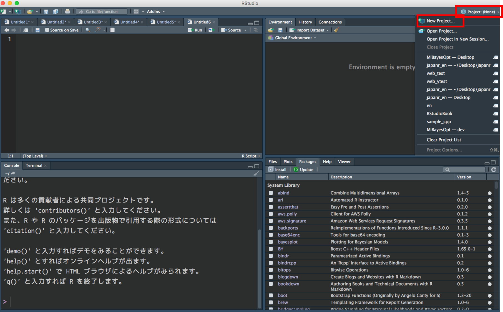
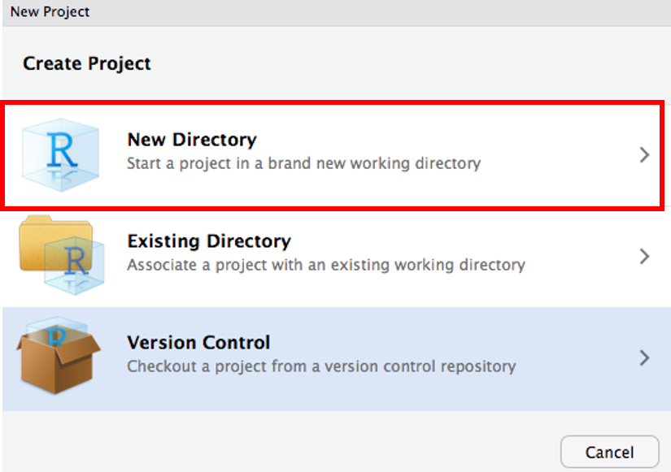
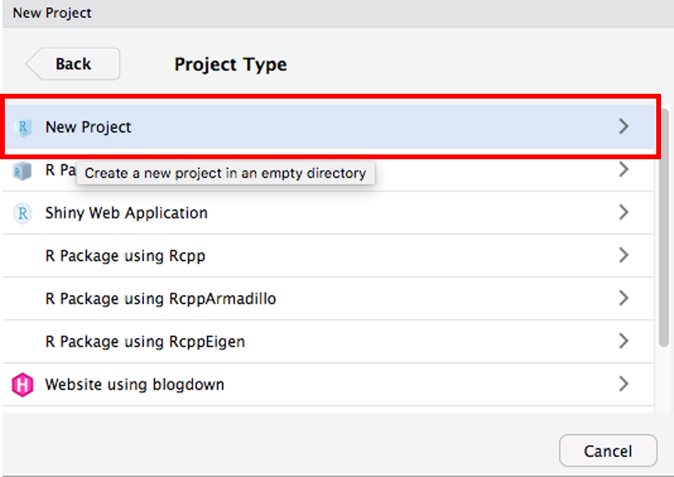
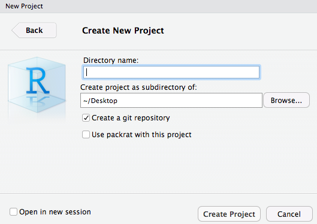
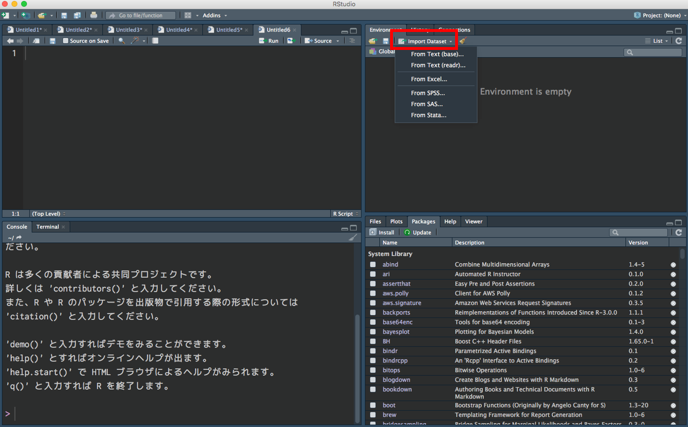
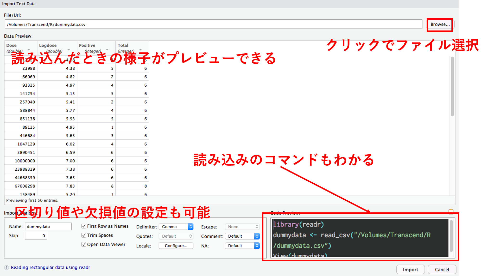

初心者セッション 1
データ読み込み編
@y__mattu
2018/1/20 Tokyo.R #67
はじめに
誰？
- 松村優哉
- Twitter: y__mattu
- GitHub: ymattu
- M1
- 計量経済学、ベイズ統計、因果推論、マーケティング
- 言語: R(歴は 3 年), SAS, Python
- https://ymattu.github.io/
- http://y-mattu.hatenablog.com/
- Tokyo.R / Japan.R 運営

著書(共著)

作ったパッケージ
MlBayesOpt
- 機械学習のパラメーターをベイズ最適化でチューニングする R パッケージ
- メンテ頑張ります…
rjumanpp
- 形態素解析機 JUMAN++の R ラッパー
- 最低限の機能しかないのでメンテ頑張ります…
さあ、R でデータ分析だ!
データ分析の(おおまかな)流れ
今日のお話はここ
まずは何よりも、
「データの読み込み」ですよね
R で分析するためには、データを R に読み込まなければなりません。
こんな場面を想像してください
(データ分析の方針がだいたい決まったので)
あなた「(上司)さん、R の環境整えたんでデータください!」
上司「OK、購買データはあの tsvファイルで、商品マスタはあっちの csv。それぞれ 100MB くらいだったかな。それと EC サイトのアクセスログは データベースにあって、データ定義は エクセルで来てるからあとで送るね。」
あなた「りょ、了解です。(データ形式くらい統一しとけよ…)」
悲しいことに。。。
- 上記は、多少盛ってますが実話です。
- データの読み込みに関しては、素人玄人関係なく同じ問題にぶつかります。
- データの形式(拡張子)はバラバラ
R でこれに対処するには？
- RStudio でプロジェクトを作成
- ファイルの位置が分かりやすくなります
- 様々な読み込み関数を使って読み込み
- ローカルにあるファイル(今日の中心)
- データベース(今日は少しだけ)
- Web スクレイピング(またの機会に…)
RStudio でプロジェクトを作成
Project → New Project

New Directory → New Project


ディレクトリ名を入力

Done!
- 読み込みの関数は、プロジェクトの中のファイルを探しにいきます。
setwd()を書く必要はありません
いよいよデータの読み込み
の前にもうひとつだけ
パッケージ内の関数の表記
readr パッケージの read_csv 関数を使いたいとき
# 方法 1
library(readr)
dat <- read_csv("hoge.csv")
# 方法 2
dat <- readr::read_csv("hoge.csv")ローカルにあるファイル
csv
read.csv()
- 多くの人が最初に習う関数
dat <- read.csv("sample.csv", stringAsFactors = FALSE)readr::read_csv()
- 高速で、列の方をいい感じにやってくれる(オススメ)
library(readr)
dat <- read_csv("sample.csv")data.table::fread()
readr::read_csvよりも高速- デフォルトでは、data.table というデータフレームとは別の形で読み込まれるのでデータフレームがいいときは
data.table = FALSE
library(data.table)
dat <- fread("sample.csv", data.table = FALSE)高速ってどのくらい速いの？
検証用データ
- Web ログデータ
- csv
- 300 万行× 5 列
- 約 500MB
検証環境
- macOS High Sierra 10.13.2
- Corei7
- メモリ 16GB
- R 3.4.3
時間を計測
system.time(dat <- read.csv("./data/log.csv")) user system elapsed
56.012 0.726 58.160 system.time(dat2 <- readr::read_csv("./data/log.csv")) user system elapsed
3.685 0.171 3.891 system.time(dat3 <- data.table::fread("./data/log.csv"))
Read 62.4% of 3460200 rows
Read 3460193 rows and 5 (of 5) columns from 0.477 GB file in 00:00:03 user system elapsed
2.517 0.125 2.676 tsv
read.delim()
read.delim()は区切り値のファイルを読む標準関数read.csv()はsep = ","をつけたもの
dat <- read.delim("sample.tsv", sep = "\t",stringAsFactors = FALSE)readr::read_tsv()
library(readr)
dat <- read_tsv("sample.tsv")data.table::fread()
- 区切り値は勝手に判断
library(data.table)
dat <- fread("sample.tsv", data.table = FALSE)その他の区切り値
read.delim()
dat <- read.delim("sample.tsv", stringAsFactors = FALSE, sep = "|")readr::read_delim()
library(readr)
dat <- read_delim("sample.tsv", "|")data.table::fread()
library(data.table)
dat <- fread("sample.tsv", data.table = FALSE)結局？
どれがいいのか
- readrパッケージの
read_***()関数が一番オススメ - 速い、エンコーディングの調整が難しくない(後述)
| read.*** | read_*** | fread | |
|---|---|---|---|
| 速さ(500MB) | 約 1 分 | 8 秒 | 3 秒 |
| 区切り地値の判定ミス | × | × | △ |
| エンコーディング | ○ | ○ | △ |
xlsx, xls
エクセルファイル
エクセルファイルを読み込めるパッケージ
- xlsx
- gdata
- XLConnect
- openxlsx
- readxl → オススメ(速い、列の型をいい感じに読める)
読み込み方
dat <- readxl::read_excel("sample.xlsx", sheet = "シート名")
# シート名はシート番号でも OKその他の拡張子
SAS(.sas7bdat), STATA(.dta), SPSS(.sav)形式のファイル
haven パッケージで読み込み
SAS
dat <- haven::read_sas("sample.sas7bdat")STATA
dat <- haven::read_dta("sample.dta")SPSS
dat <- haven::read_sav("sample.sav")文字コードの指定
エンコーディング問題
- Windows の文字コードは Shift-JIS（CP932）
- Mac の文字コードは UTF8
- Windows で作られた（日本語を含む）ファイルを Mac で読むときは
Encoding=cp932 - Mac で作られた（日本語を含む）ファイルを Windows で読むときは
Encoding=UTF8
csv を CP932 で読む
R の標準関数
dat <- read.csv("sample.csv", stringAsFactors = FALSE, fileEncoding = "cp932")readr
dat <- readr::read_csv("sample.csv", locale = locale(encoding = "cp932"))data.table
dat <- data.table::fread("sample.csv", data.table = FALSE) %>%
dplyr::mutate(VAR1 = iconv(VAR1, from = "UTF8", to = "CP932"))関数とかオプションとか
覚えられない
RStudio の GUI 読み込み

RStudio の GUI 読み込み

データベース(クラウド)編
データベースやクラウド上のデータ
- 企業にデータは膨大なのでクラウドにデータを置くことがとても多い
- こういうデータを R から直接触れたら嬉しいですよね！
便利パッケージたち
- DBI(データベースへの接続)
- dplyr(dbplyr)(データベースのテーブル操作)
- sparklyr(Spark, AWS S3)
- bigrquey(Big Query)
- RStudio の Connection タブ
データベース関連の参考資料たち
Web スクレイピング
時間がないので省略
気になる方は rvestやRSelenium、rtweetパッケージを検索!
もっと! もっと!
R は他にもいろいろなデータを読み込めます
- 地理情報データ
- 画像
- 音声
- etc…
ググると、意外といろいろ出てきます
まとめ
なんか、R でデータ分析ができそうな気がしてきましたよね!？
本スライドは revealjsパッケージを
用いて作成しています
下記 URL でソースコードを公開しています